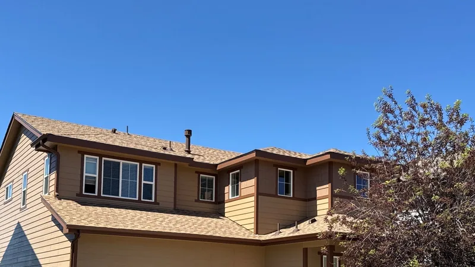
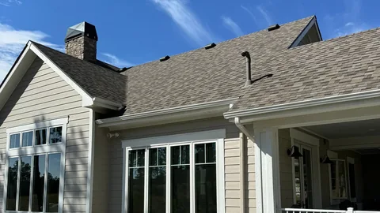
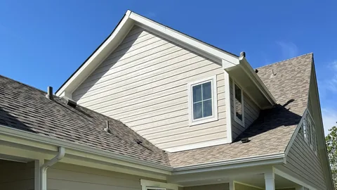
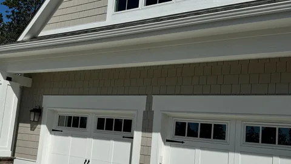
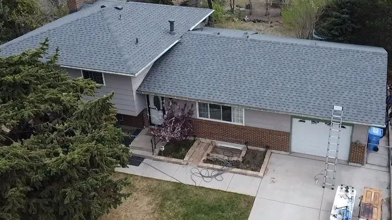
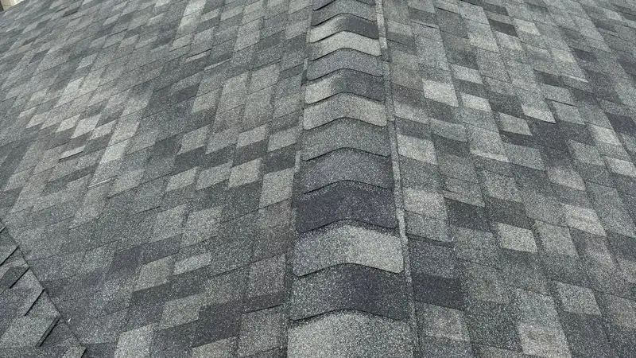
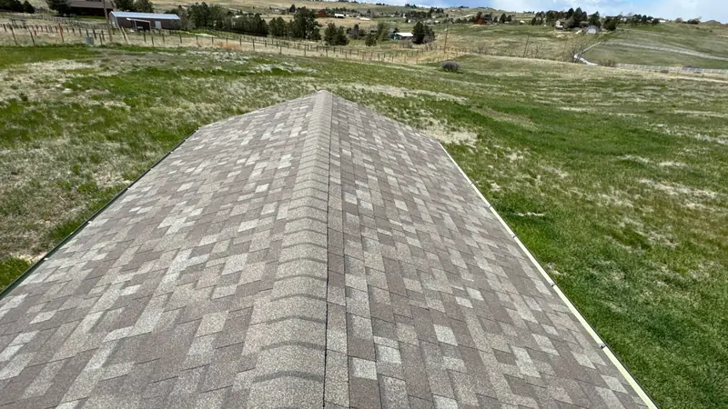

Roofing in Knoxville, TN
Roof replacement in Knoxville
When a roof is past patching, the job is to take it down to the deck and build it back right. Here's what that includes, what a roof replacement costs in Knoxville and how long it takes.

- Family roofing company. Since 2018.
- 4,000+ projects documented. On record, job by job.
- Free inspections. Written, line-by-line prices.
- 24-hour emergency line. Leaks and storm damage, any hour.
- All of East Tennessee. Twelve counties, one phone number.
A job like this
Roof and gutter replacement after hail damage
The problem
From the driveway the shingles looked fine. Up close, hail had bruised them, and the gutters were lined with granules.
What we did
We replaced the shingles across the whole roof, tied them into the flashing at the stone chimney, set the vents in a row up the slope, and replaced the gutters and downspouts.
The result
One brown shingle blend from the ridge to the gutters, clean lines at the dormer and the chimney, and straight gutters on every eave.



Signs it's time
- Shingles curling, cracking, or shedding granules into the gutters.
- Leaks in more than one spot, or the same spot twice.
- A shingle roof 20 years old or more. Heat and humidity here age shingles faster than the warranty sheet suggests.
- Storm damage across several slopes, not a few loose shingles.
- Water stains or daylight in the attic.
Not sure? Read Seven signs a roof is near the end, or book a free inspection.
What your inspection report looks like
Sample. Not a real home.
Roof overview
Every slope, the pitch, how many layers are up there, and a rough age read from the wear.
What we found
| Area | What we look for |
|---|---|
| Shingles | Cracks, curling, missing granules, lifted tabs, hail bruises |
| Flashing at chimneys, walls and skylights | Metal pulled loose, rusted through, or caulked instead of tucked under |
| Pipe boots, vents and valleys | Cracked boots, lifted vent caps, worn shingles where two slopes meet |
| Gutters, fascia and the roof edge | Granules in the gutters, soft fascia, a loose drip edge |
| The attic | Water stains, daylight through the deck, and whether it can breathe |
Every finding has a photo you keep.
The call
- Fine for now
- Needs a repair
- Time to replace
Three possible answers. We say which and why.
What's next
A written price, each part of the job on its own line.
Repair or replace?
One spot on a sound roof is a repair, and that's what we'll price.
| Repair | Replace | |
|---|---|---|
| Best when | The problem sits in one place and the rest of the roof has good years left. | Leaks keep moving, shingles are worn across whole slopes, or a storm hit most of the roof. |
| What the job is | Fix the spot: a cracked boot replaced, flashing reset under the shingles, shingles matched. | Tear-off to the deck and build back. |
| Time on site | Most repairs are done in a single visit. | One to three days once materials arrive. |
| What you get in writing | A price for the repair, one line for each part of it. | A price with a line for each part. |
Repair
- Best when
- The problem sits in one place and the rest of the roof has good years left.
- What the job is
- Fix the spot: a cracked boot replaced, flashing reset under the shingles, shingles matched.
- Time on site
- Most repairs are done in a single visit.
- What you get in writing
- A price for the repair, one line for each part of it.
Replace
- Best when
- Leaks keep moving, shingles are worn across whole slopes, or a storm hit most of the roof.
- What the job is
- Tear-off to the deck and build back.
- Time on site
- One to three days once materials arrive.
- What you get in writing
- A price with a line for each part.
When it's close, you get both prices in writing.
What a full replacement includes
- Tear-off to the deck. Old shingles and underlayment come off so the deck can be checked.
- Decking. Soft or rotted sheets get replaced. Your price shows the cost per sheet up front.
- Underlayment. Ice and water shield in every valley and around anything that pokes through the roof, synthetic underlayment everywhere else.
- Flashing. Drip edge, step flashing where the roof meets a wall, pipe boots, and the flashing around chimneys and skylights.
- Ventilation. Ridge vent and intake checked so the attic can breathe and the shingles don't bake.
- Shingles and ridge caps from the same line, so the colors match.
- Cleanup. Tarps over the beds, a magnet sweep of the yard and driveway, the dumpster gone.

What a written price looks like
Sample. Not a real home.
| Line | What it covers | How it's priced |
|---|---|---|
| Tear-off | Old shingles and underlayment off, down to the deck | By the square. A square is 100 square feet of roof. |
| Decking | Soft or rotted sheets cut out and replaced | Per sheet, counted at tear-off |
| Underlayment | Ice and water shield in valleys and around anything that pokes through, synthetic everywhere else | Ice and water shield by the valley and the penetration, synthetic by the square |
| Flashing | Drip edge, step flashing at walls, pipe boots, chimney and skylight flashing | By the piece |
| Ventilation | Ridge vent and intake, so the attic can breathe | By the vent and the length of ridge |
| Shingles and ridge caps | One line, so the colors match | By the square, with the line and color named |
| Cleanup | Tarps over the beds, a magnet sweep, the dumpster gone | Included |
Decking can't be counted until the old roof is off, so the cost per sheet is written down before work starts.
Your price carries your roof's quantities. Each line is a number you can question.
Shingles we install
Architectural shingles are the standard on Knoxville-area homes. They're thicker than the old flat 3-tab kind and hold up better in wind. We install lines from the major makers, including impact-resistant shingles for hail and algae-resistant shingles for the dark streaks on north-facing slopes. See the products we install.

Shingles and metal, side by side
| Roof | What it is | Where it fits | Cost |
|---|---|---|---|
| Architectural shingles | The standard asphalt shingle, thicker than the old flat kind. | Most Knoxville-area homes. | The standard. |
| Impact-resistant shingles | Asphalt shingles built to take hail. | Roofs in the path of hail. | Costs more. |
| Algae-resistant shingles | Shingles made to fight the dark streaks algae leaves. | Damp, shaded north-facing slopes. | Costs more. |
| Standing-seam metal | Panels from eave to ridge, joined by raised seams over hidden clips. | A house or cabin you plan to keep for decades. | Costs the most. |
Architectural shingles
- What it is
- The standard asphalt shingle, thicker than the old flat kind.
- Where it fits
- Most Knoxville-area homes.
- Cost
- The standard.
Impact-resistant shingles
- What it is
- Asphalt shingles built to take hail.
- Where it fits
- Roofs in the path of hail.
- Cost
- Costs more.
Algae-resistant shingles
- What it is
- Shingles made to fight the dark streaks algae leaves.
- Where it fits
- Damp, shaded north-facing slopes.
- Cost
- Costs more.
Standing-seam metal
- What it is
- Panels from eave to ridge, joined by raised seams over hidden clips.
- Where it fits
- A house or cabin you plan to keep for decades.
- Cost
- Costs the most.
Want metal priced next to shingles? Ask at your inspection, or read about metal roofing.
What a roof replacement costs in Knoxville
For a planning range on your own house, try the roof cost calculator.
Most asphalt shingle replacements on Knoxville-area homes run $15,000 to $30,000; the cost article walks through it line by line. What moves the number:
- Size and pitch. A steep roof takes longer and needs more safety gear.
- A second layer of old shingles to tear off.
- Every soft sheet of decking.
- The shingle line. Impact-resistant and designer shingles cost more.
- Extras at the same time, like chimney flashing, a skylight or gutters.
Your free inspection gets you a written price with each of those on its own line. Want to pay over time? See roof financing in Knoxville.
From inspection to finished roof
- Free inspection
- Written price
- Materials ordered, HOA approval first if you need it
- Install, one to three days
- Walk-through and photos
Big or steep roofs take longer, and rain moves the start date. You don't need to be home, as long as we can reach an outdoor outlet and the driveway is clear for the dumpster.

HOA, permits and storm damage
- HOA. Bring us your review form. We'll fill in the shingle maker, line and color, and order only after it's approved.
- Permits. Rules differ between the City of Knoxville, Farragut and unincorporated Knox County. We check for your address and pull the permit when one is needed.
- Storm damage. Start with insurance claims help, which walks through a claim step by step.
How roof warranties work
| Workmanship warranty | Manufacturer warranty | |
|---|---|---|
| Who stands behind it | The installer. | The shingle maker. |
| What it covers | Leaks and faults from how the roof was put on. | Defects in the shingle itself. |
| What it usually leaves out | Storm damage, wear, and work by other trades. | Installation faults, storm damage, and roofs that were never registered or can't breathe. |
| How a claim runs | Call the installer who did the work. | Through the maker, usually with the installer's help. The line named on your price sets the terms. |
| If you sell the house | Depends on the installer's terms. | Depends on the maker. Often it needs a notice within a set time. |
Workmanship warranty
- Who stands behind it
- The installer.
- What it covers
- Leaks and faults from how the roof was put on.
- What it usually leaves out
- Storm damage, wear, and work by other trades.
- How a claim runs
- Call the installer who did the work.
- If you sell the house
- Depends on the installer's terms.
Manufacturer warranty
- Who stands behind it
- The shingle maker.
- What it covers
- Defects in the shingle itself.
- What it usually leaves out
- Installation faults, storm damage, and roofs that were never registered or can't breathe.
- How a claim runs
- Through the maker, usually with the installer's help. The line named on your price sets the terms.
- If you sell the house
- Depends on the maker. Often it needs a notice within a set time.
Crestone's terms
Our written workmanship terms come with your price. The shingle line named on your price sets the maker's terms. Read both before you sign.
More about roof warranties. Want to see finished roofs first? Browse our projects.
Questions about roof replacement
Should I replace the roof before adding solar panels?
If the roof will need replacing while the panels are still up, yes. Panels have to come off and go back on for a reroof, and that cost lands on you a second time. Putting the roof on first means the panels sit on shingles that will last as long as they do. If you're getting solar quotes, get the roof looked at in the same month. More in Thinking about solar? Check the roof first.
What happens if it rains in the middle of the job?
Part of the job is never leaving the roof open overnight. Anything torn off during the day gets underlayment or a tarp before the crew leaves, and the start date moves when the forecast calls for a wet day. Summer afternoon storms around Knoxville come up fast, so the tear-off is sized to what can be covered quickly.
How much does a roof replacement cost in Knoxville?
Most asphalt shingle replacements on Knoxville-area homes of about 2,000 square feet land around $15,000 to $30,000. Size and pitch, a second layer to tear off, rotted decking and the shingle line you pick all move the number. Your free inspection gets you a written price, line by line, so you can see where the money goes. For a planning range on your own house, try the roof cost calculator.
How long does a roof replacement take?
One to three days for a typical house once the materials arrive. Size, pitch, decking and the weather all change that, and rain can push the start date. You'll have the schedule in writing before work begins, and anything opened up gets closed or tarped before the crew leaves each night.
Do I need to be home for the inspection?
Not for the outside check, as long as we can get into the yard. If you'd like the attic checked for water stains, daylight or poor airflow, someone has to let us in. If you can't be there, you'll still hear what we found, plus a written price if the roof needs work.
Do you tear off the old roof or go over it?
We tear it off. Going over an old roof hides rotted decking, adds weight and can shorten the life of the new shingles. In Knoxville city limits, an overlay skips the permit only if the first layer is intact. Tear-off costs a little more and shows you what's under there.
Get a written price on your roof
A few boxes. We'll call you back to pick a time.
Rather talk? Call (865) 830-8126. Rather text? Send a photo.
After you send this
- We call you back to set a time.
- Free inspection: every slope, the flashing and the attic if we can get in.
- A written price, one line for each part of the job. Take your time with it.
After the job
- Photos of the finished roof, and of the decking before it was covered.
- The yard cleaned, with a magnet sweep for nails.
- A walk-through before we call it done, then the invoice.